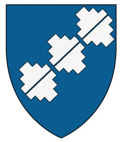

Riksråd, Riddare, Kungsdomare. Blev ca 57 år.
omkring 1350 Isokartano, Laitila, Finland. [1]
1407 Tursanperä, Mynämäki, Finland. [1]
Jöns Andersson (son av Anders Garp, tab. 2). Framträder troligen första gången 1373, med större sannolikhet 1380 som sigillvittne i Egentliga Finland. Beseglar med bevarat sigill 1386 en skrivelse å »frälsemanna vägnar». Var riksråd 1396 och 1399 och troligen även vid den internordiska herredagen i Hälsingborg i augusti 1401. Deltar i konungsräfsten i Finland 1405, stundom nämnd »konungsdomhavande i halvt Tavastland», stundom endast konungs domhavande, stundom endast som närvarande. Uppträder ännu ett par år senare, omkring 1407. Har innehaft Storgården i Letala sn, varifrån dottern enligt en 1500-talskälla var kommen, troligen även Lepistö i Virmo sn, som senare innehades av dotterbarnen och strögods i samma snr samt i Töfsala sn.